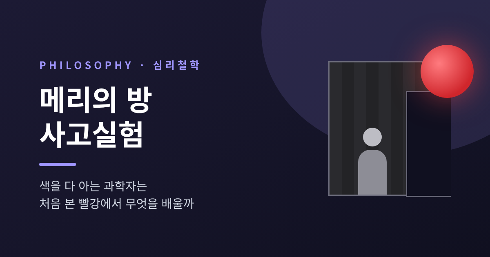
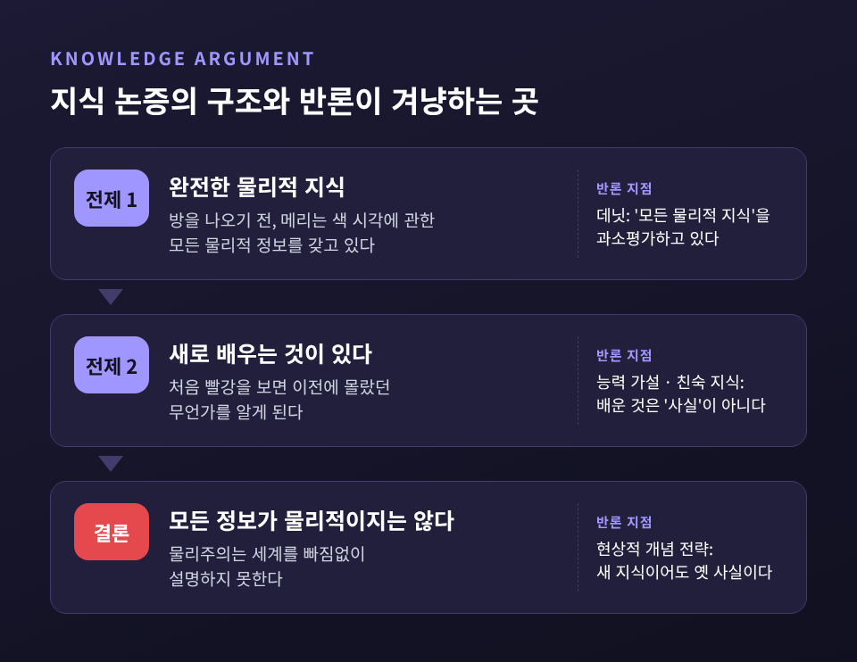
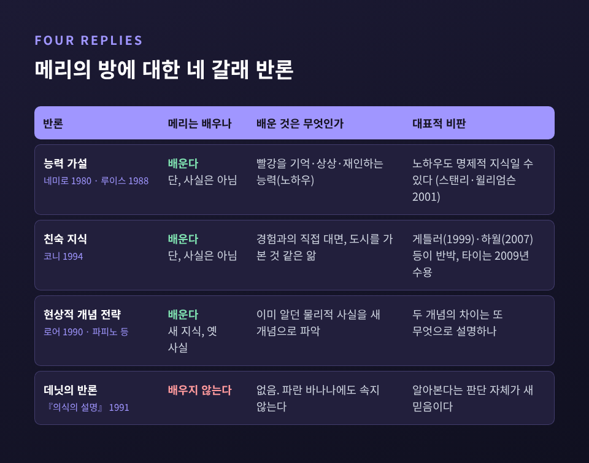

메리의 방 사고실험 — 색을 다 아는 과학자가 처음 빨강을 보면 무엇을 배울까

이번 글에서는 철학자 프랭크 잭슨이 내놓은 '메리의 방' 사고실험을 정리해 보겠습니다. 색에 관한 물리적 사실을 모두 아는 과학자가 처음 빨강을 볼 때, 새로 배우는 것이 있을까요. 논증의 구조부터 주요 반론, 잭슨 자신의 변심, 그리고 AI 시대의 함의까지 차례로 살펴봅니다.
먼저 답을 요약하면 이렇습니다. 메리가 "무언가를 배운다"는 직관은 강합니다. 다만 그 '무언가'가 사실인지, 능력인지, 새로운 개념인지를 두고 40년 넘게 논쟁이 이어지고 있습니다.
■ 흑백 방에 갇힌 과학자, 메리
이야기는 1982년 학술지 『철학 계간(The Philosophical Quarterly)』에 실린 논문 「부수현상적 퀄리아(Epiphenomenal Qualia)」에서 시작합니다. 잭슨은 1986년 『철학 저널(The Journal of Philosophy)』의 짧은 글 「메리가 몰랐던 것(What Mary Didn't Know)」에서 논증을 다듬었습니다.
설정은 단순합니다. 메리는 뛰어난 과학자입니다. 어떤 이유로 흑백 방에 갇혀, 흑백 모니터로만 세상을 탐구합니다. 그녀는 색 지각에 관한 물리적 정보를 전부 압니다. 빛의 파장, 망막이 받는 자극, 뇌의 신경 작용까지 말입니다.
그러다 방문이 열립니다. 메리는 처음으로 잘 익은 토마토를 봅니다. 잭슨의 물음은 하나입니다. "그녀는 무언가를 배울까, 배우지 않을까?"
1982년의 잭슨은 배운다는 것이 "그저 자명해 보인다"고 답했습니다.
이 직관에는 오랜 뿌리가 있습니다. 1925년 C. D. 브로드는 무한한 계산 능력을 가진 '수학적 대천사'도 암모니아 냄새는 맡아보기 전엔 모른다고 했습니다. 1974년 토머스 네이글은 「박쥐가 된다는 것은 어떤 것일까」에서, 반향정위의 물리학을 다 알아도 박쥐의 경험은 알 수 없다고 썼습니다. 잭슨은 같은 생각을 가장 깔끔한 이야기 하나로 압축한 셈입니다.
■ 지식 논증의 뼈대: 전제 두 개와 결론 하나
메리의 방은 '지식 논증'이라고도 불립니다. 가장 단순한 형태는 세 줄입니다.
- 방을 나오기 전, 메리는 인간 색 시각에 관한 모든 물리적 정보를 갖고 있다.
- 그런데 방을 나오기 전, 그녀가 갖지 못한 색 시각에 관한 정보가 있다.
- 따라서 모든 정보가 물리적 정보인 것은 아니다.

결론이 겨냥하는 것은 물리주의입니다. 세계에 존재하는 모든 것이 결국 물리적 사실이라는 견해입니다. 메리가 모든 물리적 사실을 알고도 무언가를 새로 배운다면, 물리적 사실이 아닌 무언가가 있다는 뜻이 됩니다.
그 '무언가'에 붙은 이름이 퀄리아(qualia)입니다. 빨강을 볼 때 바로 그렇게 느껴지는 경험의 질적 성격을 가리킵니다.
1986년 글에서 잭슨은 몇 가지 오해를 미리 막아 두었습니다. 상상력은 쟁점이 아니라고 했습니다. 논리적 능력을 아무리 높여도 빈틈은 메워지지 않는다고도 했습니다. 핵심은 메리가 풀려난 뒤, 다른 사람들의 경험에 대해 자신이 놓친 것이 있었음을 깨닫는다는 점입니다. 그는 이 논증을 "증명할 수는 없지만 매우 그럴듯한 전제"에서 나온 타당한 논증이라고 불렀습니다.
물리주의자가 빠져나갈 길은 크게 셋입니다. 메리가 정말 배우는지 의심하거나, 배운 것이 '사실'은 아니라고 하거나, 새 지식이 새 사실을 뜻하지는 않는다고 하는 길입니다.
■ 네 갈래의 반론

능력 가설 — 사실이 아니라 '할 줄 앎'을 얻는다
로런스 네미로(1980, 1990)와 데이비드 루이스(1988, 「경험이 가르치는 것」)의 입장입니다. 메리가 얻는 것은 새로운 사실이 아니라 능력이라는 것입니다. 빨강을 기억하고, 상상하고, 다시 보면 알아보는 능력 말입니다. 루이스는 "어떤 것인지 안다는 것은 능력을 갖는 것"이라고 정리했습니다.
깔끔하지만 빈틈도 지적됩니다. 스탠리와 윌리엄슨(2001)은 노하우도 결국 명제적 지식이라고 주장했습니다. 그렇다면 '사실 대 능력'이라는 구분 자체가 흔들립니다. 잭슨은 풀려난 메리가 타인에 관한 사실을 배웠는지 고민한다는 것 자체가, 능력 이상의 것을 얻었다는 신호라고 응수했습니다.
친숙 지식 — 도시를 직접 가 본 것처럼
얼 코니(1994)는 제3의 길을 냈습니다. 메리가 얻는 것은 명제도 능력도 아닌 '친숙(acquaintance) 지식'이라는 것입니다. 지도로만 알던 도시를 직접 걸어 보고 아는 것과 비슷합니다. 경험과 직접 대면했을 뿐, 세계에 새로운 사실이 늘어난 것은 아니라는 해석입니다. 이 견해는 비판도 받았지만, 마이클 타이는 2009년에 이쪽으로 입장을 옮겼습니다.
현상적 개념 전략 — 옛 사실, 새 개념
오늘날 물리주의자들이 가장 많이 택하는 길입니다. 메리는 새로운 지식을 얻는 것이 맞다고 인정합니다. 다만 새로 배운 사실은 없다고 봅니다. 이미 물리적 개념으로 알던 사실을, 경험을 통해서만 얻을 수 있는 '현상적 개념'으로 다시 파악했다는 것입니다. 브라이언 로어(1990/1997), 데이비드 파피노 등이 이 노선을 발전시켰습니다. '샛별'과 '개밥바라기'가 같은 금성을 다른 방식으로 가리키는 것과 비슷한 구조입니다.
비판의 요지는 이렇습니다. 같은 사실을 두 방식으로 안다면, 그 두 방식의 차이는 또 무엇으로 설명하느냐는 것입니다. 현상적 개념 안에 비물리적 요소가 숨어 있는 것 아니냐는 우려도 있습니다.
데닛 — 메리는 놀라지 않는다
대니얼 데닛은 더 과감했습니다. 1991년 『의식의 설명』에서 그는 이야기의 결말을 바꿔 썼습니다. 친구들이 방을 나온 메리에게 파랗게 칠한 바나나를 내밉니다. 메리는 속지 않습니다. 바나나는 노란데 이건 파랗다고 곧바로 알아챕니다. 노랑과 파랑이 자기 신경계에 어떤 반응을 일으킬지 이미 정확히 알고 있었기 때문입니다.
데닛의 요점은 '모든 물리적 지식'이 얼마나 방대한지 우리가 과소평가한다는 것입니다. 상상하기 어려운 것을 상상할 수 없다고 착각한다는 진단입니다. 2000년대에는 흑백 카메라를 단 로봇이 스스로를 색 보는 상태로 바꾸는 '로보메리' 변형도 내놓았습니다.
반대쪽 답도 날카롭습니다. 메리가 "지금 사람들이 파랑이라 부르는 것을 본다"고 판단할 수 있다면, 그 순간 새 믿음을 대량으로 얻은 것 아니냐는 반론입니다. 토린 알터는 로보메리가 색 경험이 담긴 상태로 스스로를 옮겼다면 연역이 아니라 '반칙'이라고 지적했습니다.
■ 논증을 만든 사람이 논증을 버리다
이 논쟁에서 가장 흥미로운 대목은 잭슨 자신의 변화입니다.
예전의 잭슨은 퀄리아가 존재하지만 물리 세계에 아무 영향도 주지 않는다고 봤습니다. 논문 제목의 '부수현상적'이 바로 그 뜻입니다. 지금의 잭슨은 물리주의자입니다.
계기는 부수현상론의 난점이었습니다. 퀄리아가 아무것도 일으키지 못한다면, 내가 빨강을 경험했다는 믿음도 퀄리아가 일으킬 수 없습니다. 그러면 우리는 퀄리아를 어떻게 안다는 말입니까. 잭슨은 1995년 후기에서 이 점을 들어 논증 어딘가가 잘못됐다고 결론 내렸습니다. 1990년대 후반부터는 표상주의 쪽으로 기울었습니다. 빨강을 보는 경험은 대상의 어떤 속성을 '표상하는' 상태이고, 그 표상 방식은 물리적으로 설명될 수 있다는 것입니다.
2011년에 처음 실린 인터뷰에서 그는 부수현상론을 "상식에 대한 철학적 재주의 승리"였다고 돌아봤습니다. 그러면서도 고민의 흔적을 숨기지 않았습니다. 색이 일종의 환상이라는 견해를 "월·수·금에는" 택한다고 말했습니다. 나머지 날에는 빨강이 대상의 빛 관련 속성 사이의 유사성 관계를 표상한다고 본다고 했습니다.
물론 잭슨이 마음을 바꿨다고 논증이 사라지지는 않습니다. 논증은 만든 사람의 손을 떠나 살아 있습니다. 2020년 필페이퍼스 설문에서 응답한 철학자 1,733명 가운데 마음에 관해 물리주의를 택한 비율은 51.93%, 비물리주의는 32.08%였습니다. 과반이 물리주의 쪽이지만, 셋 중 하나는 여전히 아니라고 답한 셈입니다.
■ 오늘의 메리: 색맹의 '화성 색'과 언어 모델
메리는 사고실험이지만, 비슷한 장면이 현실에도 있습니다.
신경과학자 라마찬드란과 허버드는 색맹이면서 공감각을 가진 한 남성을 보고했습니다. 그는 숫자를 볼 때 평소에는 지각하지 못하는 색조를 경험했고, 그것을 '화성의 색'이라 불렀습니다. 망막은 특정 파장을 처리하지 못하지만, 뇌의 색 영역은 작동하며 숫자에 의해 활성화된다는 설명입니다. 연구자들은 이 사례가 메리에게 일어날 일을 시사한다고 보았습니다.
AI 쪽에서는 질문이 더 직접적입니다. 텍스트만으로 학습한 언어 모델은 어떤 의미에서 흑백 방의 메리와 닮았습니다. 2021년 압두 등의 연구는 언어 모델 속 색 단어의 배치가 사람의 지각적 색공간(CIELAB)과 유의미하게 대응한다는 것을 보였습니다. 따뜻한 색이 차가운 색보다 평균적으로 더 잘 맞았다는 결과도 함께였습니다. 글만 읽고도 색들 사이의 '관계'는 상당 부분 복원된다는 뜻입니다.
그렇다면 그 모델은 빨강을 아는 것일까요. 데닛의 눈으로 보면, 관계를 충분히 안다면 더 알아야 할 것은 없습니다. 잭슨의 초기 직관으로 보면, 가장 중요한 하나가 빠져 있습니다.
철학자 데이비드 차머스는 2022년 강연에서 현재의 대형 언어 모델이 의식적일 가능성을 10% 미만으로 추정했습니다. 반대 근거 여섯 가지 가운데 하나가 바로 감각과 신체의 부재였습니다. 다만 그는 감각이 의식에 꼭 필요하다는 주장에는 "다소 회의적"이라고 덧붙였습니다. 여기서도 답은 한쪽으로 기울지 않습니다.
정리하면 이렇습니다. 메리의 방은 물리주의를 무너뜨렸다기보다, 물리주의가 무엇을 설명해야 하는지를 선명하게 만든 질문입니다. 능력, 친숙함, 새로운 개념, 혹은 애초에 배울 것이 없다는 답까지 — 어느 쪽을 택하든 '처음 빨강을 보는 순간'을 설명할 책임이 따릅니다.
"모든 것을 아는 것과 직접 보는 것은 같은가." 이 질문은 이제 사람만이 아니라 기계에게도 던져지고 있습니다.
메리가 방을 나서며 무엇을 배웠냐고 물으신다면, 아직은 각자의 답을 조심스럽게 내놓을 수밖에 없다고 말씀드리겠습니다.
참고 자료
- Stanford Encyclopedia of Philosophy, "Qualia: The Knowledge Argument" — https://plato.stanford.edu/entries/qualia-knowledge/
- Internet Encyclopedia of Philosophy, "The Knowledge Argument Against Physicalism" (Torin Alter) — https://iep.utm.edu/know-arg/
- Frank Jackson, "What Mary Didn't Know", The Journal of Philosophy 83(5), 1986 — https://courses.grainger.illinois.edu/PHYS419/sp2021/Jackson1986_WhatMaryDidntKnow.pdf
- Wikipedia, "Knowledge argument" — https://en.wikipedia.org/wiki/Mary's_room
- James Garvey, "Frank Jackson, Latter Day Physicalist", The Philosophers' Magazine — https://philosophersmag.com/?p=41
- PhilPapers Survey 2020 결과 — https://survey2020.philpeople.org/survey/results/all
- Torin Alter, "Phenomenal Knowledge Without Experience" — https://philarchive.org/archive/ALTPKW-2
- Sean Carroll, "Martian Colors" (2007) — https://www.preposterousuniverse.com/blog/?p=1456
- Abdou et al., "Can Language Models Encode Perceptual Structure Without Grounding? A Case Study in Color" (2021) — https://arxiv.org/abs/2109.06129
- David Chalmers, "Could a Large Language Model be Conscious?" (2023) — https://arxiv.org/abs/2303.07103